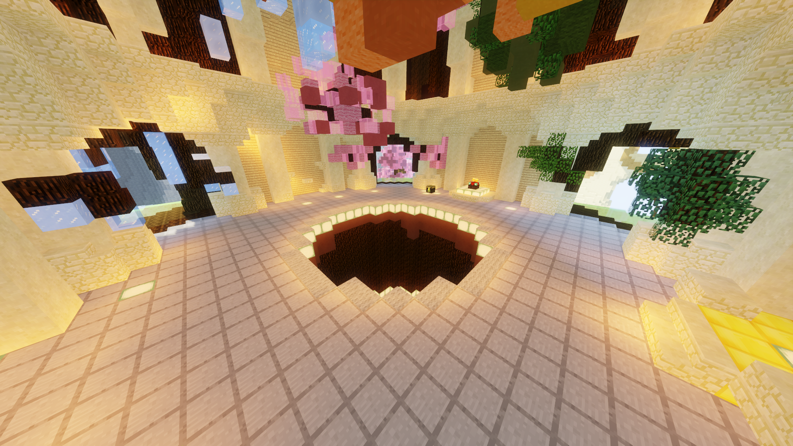
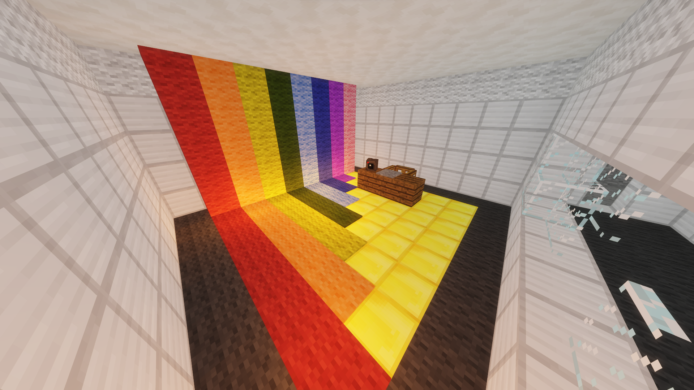
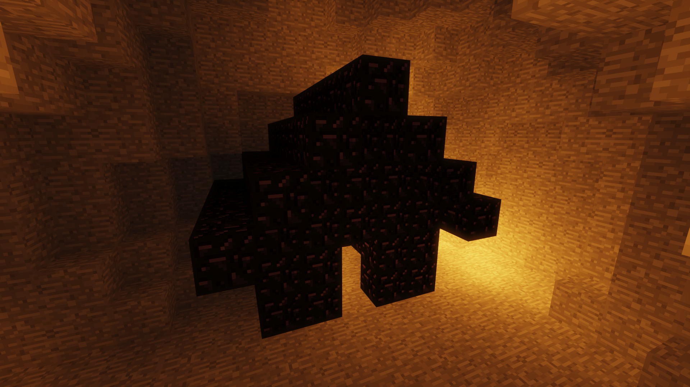

|
|  |
| Top to bottom: An image of the tree in the center of the map; the spawn area of the Four Seasons map. |
From the Hypixel Pit Wiki
The Four Seasons (commonly referred to as the Seasons) map is a map in the Hypixel Pit. It was the second to be released, published on July 5th, 2018 in The Pit 0.3.5. The Four Seasons map appears after the Genesis map and before the Elements map in the map rotation.
The map has four quadrants; images of these are shown below.
Spring

Summer

Autumn

Winter

The Seasons map contains two secret areas.
|  |
| The office. |
Inside the cave in the Summer quadrant, at the bottom of the furthest lake from the entrance, there is an open iron door located at (8, 45, −184). Entering it and walking down a tunnel leads the player to a large office made of iron blocks with a rainbow wall.
|  |
| The obsidian house. |
Inside the cave in the Winter quadrant, a small obsidian house exists. Because the path to it is made of lava, players must place obsidian or use the Mineman perk to reach it.